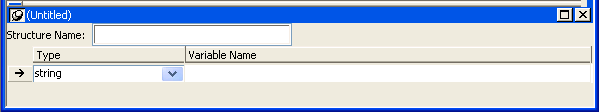

Although you define object-level structures in the painter for a specific object and global structures in the Structure painter, in both cases you define the structure in a Structure view. The following sections describe each of the steps you take to define a new structure:
How you open the Structure view depends on whether you are defining an object-level structure or a global structure.
 To define an object-level structure:
To define an object-level structure:
Open the object for which you want to declare the structure.
You can declare structures for windows, menus, user objects, or applications.
Select Insert>Structure from the menu bar.
A Structure view opens.

 To define a global structure:
To define a global structure:
Select Structure from the Objects tab in the New dialog box.
The Structure painter opens. It has one view, the Structure view. In the Structure painter, there is no Structure Name text box in the Structure view.
If you are defining an object-level structure, you name it in the Structure Name box in the Structure view. If you are defining a global structure, you name it when you save the structure.
Structure names can have up to 40 characters. For information about valid characters, see the PowerScript Reference .
You might want to adopt a naming convention for structures so that you can recognize them easily. A common convention is to preface all global structure names with s_ and all object-level structure names with str_.
 To define the variables that compose the structure:
To define the variables that compose the structure:
Enter the datatype of a variable that you want to include in the structure.
The default for the first variable is string; the default for subsequent variables is the datatype of the previous variable. You can specify any PowerBuilder datatype, including the standard data types such as integer and string, as well as objects and controls such as Window or MultiLineEdit.
You can also specify any object types that you have defined. For example, if you are using a window named w_calculator that you have defined and you want the structure to include the window, type w_calculator as the datatype. (You cannot select w_calculator from the list, since the list shows only built-in data types.)
 A structure as a variable A variable in a structure can itself be a structure. Specify
the structure's name as the variable's datatype.
A structure as a variable A variable in a structure can itself be a structure. Specify
the structure's name as the variable's datatype.
 Specifying decimal places If you select decimal as the datatype, the default number
of decimal places is 2. You can also select decimal{2} or
decimal{4} to specify 2 or 4 decimal places explicitly.
Specifying decimal places If you select decimal as the datatype, the default number
of decimal places is 2. You can also select decimal{2} or
decimal{4} to specify 2 or 4 decimal places explicitly.
Enter the name of the variable.
Repeat until you have entered all the variables.
How you save the structure depends on whether it is an object-level structure or a global structure.
The names of object-level structures are added to the Structure List view and display in the title bar of the Structure view as soon as you tab off the Structure Name box. As you add variables to the structure, the changes are saved automatically. When you save the object that contains the structure, the structure is saved as part of the object in the library where the object resides.
 Comments and object-level structures You cannot enter comments for an object-level structure, because
it is not a PowerBuilder object.
Comments and object-level structures You cannot enter comments for an object-level structure, because
it is not a PowerBuilder object.
 To name and save a global structure:
To name and save a global structure:
Select File>Save from the menu bar, or close the Structure painter.
The Save Structure dialog box displays.
Name the structure.
(Optional) Add comments to describe your structure.
Choose the library in which to save the structure.
Click OK.
PowerBuilder stores the structure in the specified library. You can view the structure as an independent entry in the Library painter.